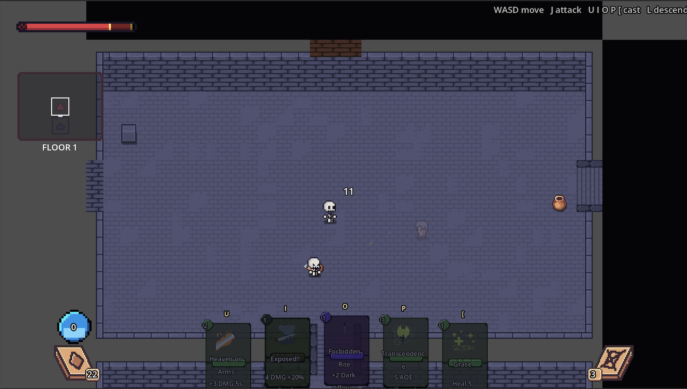
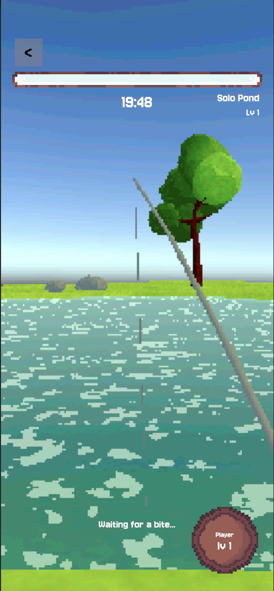

Alcherogue
An alchemy shop game where you pour by eye. Recipes list the ingredients but never the amounts, so the colour of the liquid is the only measure you get.
- My part
- Everything: design, code, illustration, technical art
- Built with
- Unity 6, C#
Systems & Gameplay Designer
An alchemy shop game where you pour by eye. Recipes list the ingredients but never the amounts, so the colour of the liquid is the only measure you get.
A two-button reaction game on a packed dance floor. Tap left to high-five a friend, tap right to stop a pickpocket.
A real-time action card battler. Your cards are your skills, and the fight keeps going while you play them.

A multiplayer fishing game where your phone is the rod. You cast with a real swing and feel the bite through haptics.

A typing game about getting through the Devil’s paperwork. Slow or sloppy typing fills the overheat bar, and documents you ignore expire.
A cozy pixel-art farming game that uses your real local weather. When it rains outside, it rains on your farm, and that changes what’s worth planting.